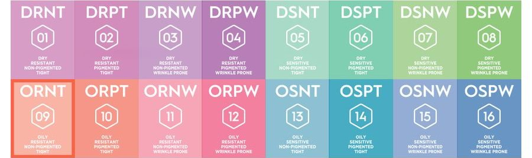

COCODEMER Skin Code Serum 09 ORNT
| Volume | 30ml |
|---|---|
| Suitable for | All skin types |
| Skin type | ORNT · Oily▲ Sensitive▼ Pigment▼ Wrinkles▼ |
| Recommended base | Serum No.1 |
| Key technology | L-CODEMAR ELIXIR™ |
| Manufacturer · Responsible distributor | JUNGCOS CO., LTD. / COCODEMER CO., LTD. |
This product is not yet listed on the Smart Store. For purchases, please use the store, or contact us through the B2B inquiry.
COCODEMER Skin Code Serum 09 ORNT
Mind the pores from here on — clear, luminous skin
This is an oily skin type whose pores widen easily.
Soft and bouncy, it comes close to ideal, but left unattended, sebum widens the pores and blackheads appear.
Choose ingredients matched to your skin and put moisture first.
#OilySkin #DehydratedOilySkin #Pores #Blackheads
Your Skin at a Glance
Serum No.1
Coconut palm, an excellent moisturiser, bursts like a water droplet the moment it touches the skin — cool and refreshing.
Key Active Code

＊Sh Sodium Hyaluronate — High-Molecular-Weight Hyaluronic Acid
: One of the skin's natural moisturising agents. It draws in up to several hundred times its own weight in water, helping keep skin feeling hydrated.
* Bt Betaine — Moisturising Amino Acid Derivative
: Derived from sugar beet, it helps limit moisture loss and supports the skin's protective veil.
* Rf Raffinose — Beet-Derived Oligosaccharide Humectant
: A natural moisturising agent whose structure attracts water, helping prevent moisture from evaporating.
* Pn Panthenol — Moisturising Vitamin
: An alcohol analogue of Vitamin B5 that helps moisturise and condition the skin.
*Refers to the properties of the raw ingredients only.
See the ingredient reference →
Your Care Routine
1. Clair Blanc Cleansing Water : soak a cotton pad generously for a low-irritation cleanse
2. Clair Blanc Cleansing Foam : fine bubbles for a thorough, comfortably moist finish
1. Facial Purifiant Clay Mask : pore and sebum care (three times a week recommended)
2. Meilleur Facial Toner : gives skin all the moisture it needs, to balance oil and water
(cotton pads not recommended)
3. Skin Code Serum ORNT : the serum matched to your skin, to help strengthen the barrier
Meilleur UV Sun Protecter : apply evenly, about a coin-sized amount, 30 minutes before going out.
How To Use
Pump the dropper, then smooth a small amount gently over the whole face.
Mind the pores from here on — clear, luminous skin
This is an oily skin type whose pores widen easily. Soft and bouncy, it comes close to ideal, but left unattended, sebum widens the pores and blackheads appear. Choose ingredients matched to your skin and put moisture first.
#OilySkin #DehydratedOilySkin #Pores #Blackheads
Serum No.1
Coconut palm, an excellent moisturiser, bursts like a water droplet the moment it touches the skin — cool and refreshing.
＊Sh Sodium Hyaluronate — High-Molecular-Weight Hyaluronic Acid : One of the skin's natural moisturising agents. It draws in up to several hundred times its own weight in water, helping keep skin feeling hydrated. * Bt Betaine — Moisturising Amino Acid Derivative : Derived from sugar beet, it helps limit moisture loss and supports the skin's protective veil. * Rf Raffinose — Beet-Derived Oligosaccharide Humectant : A natural moisturising agent whose structure attracts water, helping prevent moisture from evaporating. * Pn Panthenol — Moisturising Vitamin : An alcohol analogue of Vitamin B5 that helps moisturise and condition the skin. *Refers to the properties of the raw ingredients only.
1. Clair Blanc Cleansing Water : soak a cotton pad generously for a low-irritation cleanse 2. Clair Blanc Cleansing Foam : fine bubbles for a thorough, comfortably moist finish
1. Facial Purifiant Clay Mask : pore and sebum care (three times a week recommended) 2. Meilleur Facial Toner : gives skin all the moisture it needs, to balance oil and water (cotton pads not recommended) 3. Skin Code Serum ORNT : the serum matched to your skin, to help strengthen the barrier
Meilleur UV Sun Protecter : apply evenly, about a coin-sized amount, 30 minutes before going out.
Pump the dropper, then smooth a small amount gently over the whole face.
| Net volume or weight | 30ml |
|---|---|
| Suitable for | All skin types |
| Shelf life / period after opening | Use within 2 months of opening |
| How to use | Pump the dropper, then smooth a small amount gently over the whole face. |
| Cosmetics manufacturer | JUNGCOS CO., LTD. |
| Responsible distributor | COCODEMER CO., LTD. |
| Country of origin | Republic of Korea |
| Full ingredients (INCI) | [BASE]Cocos Nucifera (Coconut) Water, Water, Caprylic/Capric Triglyceride, Glycerin, Butylene Glycol, Methylpropanediol, Hydrogenated Poly(C6-14 Olefin), Niacinamide, Raffinose, Centella Asiatica Extract, Ficus Carica (Fig) Fruit Extract, 1,2-Hexanediol, Betaine, Dimethicone, Panthenol, Squalane, Polysorbate 60, Hydroxyethyl Acrylate/Sodium Acryloyldimethyl Taurate Copolymer, Hydroxyacetophenone, Honey Extract, Arctium Lappa (Burdock) Root Extract, Beta-Glucan, Hydrogenated Lecithin, Steareth-21, Perilla Frutescens Extract, Polyquaternium-51, Cetyl Ethylhexanoate, Inositol, Neopentyl Glycol Diheptanoate, Xanthan Gum, Cetyl Alcohol, Lauryl Glucoside, Polyglyceryl-2 Dipolyhydroxystearate, Steareth-2, Isohexadecane, Hydrogenated Phosphatidylcholine, Sodium Hyaluronate, Ethylhexylglycerin, Sorbitan Laurate, Palmitic Acid, Adenosine, Polyglyceryl-10 Myristate, Stearic Acid, Carbomer, Cetearyl Alcohol, Polyglyceryl-2 Stearate, Sorbitan Isostearate, Carthamus Tinctorius (Safflower) Seed Oil, Disodium EDTA, Oenothera Biennis (Evening Primrose) Oil, PEG-30 Dipolyhydroxystearate, Ceramide NP, Polysorbate 20, Carnosine, Hydroxyethylcellulose, Polyglutamic Acid, Acetyl Dipeptide-1 Cetyl Ester, Hydrolyzed Hyaluronic Acid, Tocopheryl Acetate, Acetyl Glutamine, Acetyl Hexapeptide-8, Lysolecithin, Glyceryl Polymethacrylate, Myristic Acid, Phytosterols, Palmitoyl Pentapeptide-4, Arachidic Acid, Lauric Acid, Oleic Acid, Alanine, Arginine, Aspartic Acid, Carnitine, Citrulline, Glutamic Acid, Glutamine, Glycine, Isoleucine, Leucine, Methionine, Ornithine, Phenylalanine, Proline, Serine, Threonine, Tryptophan, Tyrosine, Valine, ±Glycereth-26, ±Dipropylene Glycol, ±Acrylates/C10-30 Alkyl Acrylate Crosspolymer, ±Tromethamine, ±PVM/MA Copolymer, ±Cyclopentasiloxane, ±Hydrogenated Polydecene, ±Polyglycerin-3, ±Dimethicone/Vinyl Dimethicone Crosspolymer, ±Silica, ±PEG-40 Hydrogenated Castor Oil [ACTIVE]Cocos Nucifera (Coconut) Water, Glycerin, Butylene Glycol, 1,2-Hexanediol, Methylpropanediol, Centella Asiatica Extract, Ficus Carica (Fig) Fruit Extract, Hydrogenated Lecithin, Sodium Hyaluronate, Acrylates/C10-30 Alkyl Acrylate Crosspolymer, Ceramide NP, Tromethamine, ±Hydrating)Panthenol, Betaine, Raffinose, ±Brightening)Niacinamide, Creatine, Carnosine, ±Fine lines)Adenosine, Sodium DNA, ±Sensitive)Aloe Barbadensis Leaf Extract, Candida/Garcinia Ferment, Helianthus Annuus (Sunflower) Seed Oil, 2,3-Butanediol, Asiatic Acid, Asiaticoside, Ethoxydiglycol, Madecassic Acid, Madecassoside, Water [FRAGRANCE]Fragrance (Parfum) |
| Functional cosmetic approval | Not applicable |
| Precautions | 1. If red spots, swelling, itching or other abnormal reactions occur during or after use, or on the treated area following exposure to direct sunlight, consult a dermatologist. 2. Avoid applying to broken or wounded skin. 3. Storage and handling — a) Keep out of reach of children. b) Store away from direct sunlight. |
| Quality guarantee | In the event of a defect, compensation is provided in accordance with the Consumer Dispute Resolution Standards published by the Korea Fair Trade Commission. |
| Customer enquiries | 010-3307-9341 / cocodemer@cocodemer.co.kr |
* Required disclosure under Korean cosmetics labelling and advertising rules. This is a reference translation; for the certified ingredient declaration, CPSR or CoA, please contact us through the B2B enquiry.